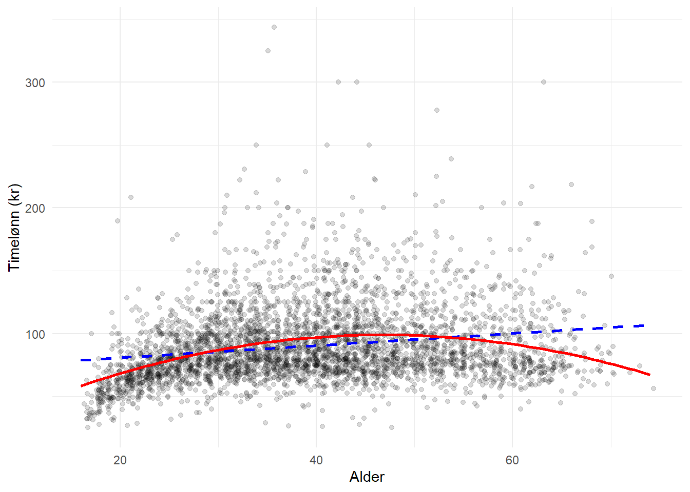

library(tidyverse)
library(haven)
library(modelsummary)
library(lmtest)
library(sandwich)11 Utvidelser av regresjonsmodeller
I forrige kapittel så vi på helt grunnleggende lineær regresjon. Det er et godt utgangspunkt, men i praksis trenger man ofte å utvide modellene litt. I dette kapittelet ser vi på noen av de vanligste utvidelsene: ikke-lineære sammenhenger, log-transformasjoner, og robuste standardfeil. Alt dette er ting du vil møte i pensumlitteraturen og i empiriske artikler, så det er nyttig å vite hvordan det gjøres i R.
11.1 Polynomiske ledd: ikke-lineære sammenhenger
I forrige kapittel så vi at sammenhengen mellom alder og timelønn ikke nødvendigvis er helt lineær. Kanskje lønna øker raskt i starten av karrieren, flater ut, og så synker litt mot slutten? En rett linje fanger ikke opp dette. En enkel løsning er å legge til et andregradsledd, altså alder i andre potens (\(alder^2\)). Da får vi en kurve i stedet for en rett linje.
I R bruker vi funksjonen poly() eller legger til I(age^2) direkte i formelen. La oss prøve begge:
est_lin <- lm(time89 ~ age, data = abu89)
est_poly <- lm(time89 ~ age + I(age^2), data = abu89)La oss sammenligne de to modellene:
modelsummary(list("Lineær" = est_lin, "Kvadratisk" = est_poly),
fmt = 2,
gof_omit = 'DF|Deviance|AIC|BIC|Log.Lik.|RMSE')| Lineær | Kvadratisk | |
|---|---|---|
| (Intercept) | 71.11 | 5.11 |
| (1.62) | (4.60) | |
| age | 0.48 | 4.01 |
| (0.04) | (0.23) | |
| I(age^2) | -0.04 | |
| (0.00) | ||
| Num.Obs. | 3759 | 3759 |
| R2 | 0.039 | 0.095 |
| R2 Adj. | 0.038 | 0.094 |
| F | 151.239 | 197.015 |
Koeffisienten for I(age^2) er negativ, noe som betyr at kurven bøyer nedover. Altså: lønna øker med alder, men økningen avtar. Dette gir en omvendt U-form som er ganske typisk for inntekt over livsløpet.
Merk at når du har med et andregradsledd er det ikke lenger meningsfylt å tolke koeffisienten for age alene. De to koeffisientene må tolkes sammen fordi de beskriver ulike deler av den samme kurven. Den beste måten å forstå effekten på er å se på et plot:
ggplot(abu89, aes(x = age, y = time89)) +
geom_jitter(alpha = .15) +
geom_smooth(method = "lm", formula = y ~ x,
se = FALSE, col = "blue", linetype = "dashed") +
geom_smooth(method = "lm", formula = y ~ x + I(x^2),
se = FALSE, col = "red") +
labs(x = "Alder", y = "Timelønn (kr)") +
theme_minimal()
Den stiplete blå linjen er den lineære modellen, mens den røde kurven er modellen med andregradsledd. Vi ser at den røde kurven fanger opp mønsteret i dataene bedre, særlig for de yngste og de eldste.
Man kan i prinsippet legge til høyere ordens ledd (I(age^3) osv.), men i praksis er det sjelden nødvendig med mer enn andregradsledd. Høyere ordens polynomer gir fort rare kurver som er vanskelige å tolke og som gjerne bare tilpasser seg støy i dataene.
11.2 Log-transformasjoner
En annen vanlig måte å håndtere ikke-lineære sammenhenger på er å bruke logaritmen av variablene. Dette er særlig nyttig for variable som inntekt, lønn, og andre økonomiske størrelser som ofte har en skjev fordeling med en lang hale til høyre.
11.2.1 Logaritme av utfallsvariabelen
Hvis vi tar logaritmen av utfallsvariabelen (time89), endrer vi tolkningen av koeffisientene. Nå uttrykkes endringer i prosent i stedet for i kroner:
est_log <- lm(log(time89) ~ age, data = abu89)
modelsummary(list("Kroner" = est_lin, "Log(kroner)" = est_log),
fmt = 3,
gof_omit = 'DF|Deviance|AIC|BIC|Log.Lik.|RMSE')| Kroner | Log(kroner) | |
|---|---|---|
| (Intercept) | 71.110 | 4.226 |
| (1.622) | (0.016) | |
| age | 0.483 | 0.006 |
| (0.039) | (0.000) | |
| Num.Obs. | 3759 | 3759 |
| R2 | 0.039 | 0.053 |
| R2 Adj. | 0.038 | 0.053 |
| F | 151.239 | 210.357 |
I den første modellen (i kroner) betyr koeffisienten for alder at timelønna øker med ca. 0.48 kroner per år. I den andre modellen (log) betyr koeffisienten at timelønna øker med ca. 0.5% per år.1
11.2.2 Logaritme av forklaringsvariabelen
Man kan også ta logaritmen av forklaringsvariabelen. Da endres tolkningen til å handle om prosentvis endring i forklaringsvariabelen. Vi bruker et annet eksempel her fordi log av alder ikke er så meningsfylt, men log av f.eks. arbeidstid eller lignende variable kan gi mening i andre datasett.
11.2.3 Oppsummering av log-transformasjoner
| Modell | Tolkning av \(\beta\) |
|---|---|
| \(y = \alpha + \beta x\) | \(x\) opp 1 enhet \(\rightarrow\) \(y\) endres med \(\beta\) enheter |
| \(\log(y) = \alpha + \beta x\) | \(x\) opp 1 enhet \(\rightarrow\) \(y\) endres med ca. \(\beta \times 100\) prosent |
| \(y = \alpha + \beta \log(x)\) | \(x\) opp 1% \(\rightarrow\) \(y\) endres med ca. \(\beta / 100\) enheter |
| \(\log(y) = \alpha + \beta \log(x)\) | \(x\) opp 1% \(\rightarrow\) \(y\) endres med ca. \(\beta\) prosent (elastisitet) |
Denne tabellen er verd å ha i bakhodet. Det siste tilfellet, der begge er log-transformert, er det man kaller en elastisitet i økonomi.
11.3 Robuste standardfeil
Standardfeilene fra vanlig OLS-regresjon bygger på en antakelse om at variansen i feilleddene er konstant (homoskedastisitet). Hvis denne antakelsen er brutt – noe den ofte er i praksis – kan standardfeilene bli feil. Konsekvensen er at konfidensintervaller og p-verdier ikke er til å stole på.
Løsningen er å bruke robuste standardfeil, gjerne kalt “Huber-White” eller “sandwich” standardfeil. Disse gir korrekte standardfeil selv om variansen ikke er konstant.2
11.3.1 Med modelsummary
Den enkleste måten å rapportere robuste standardfeil i R er å bruke vcov-argumentet i modelsummary. Da trenger du ikke engang å laste ekstra pakker utover det du allerede har:
modelsummary(list("Vanlige SE" = est_lin, "Robuste SE" = est_lin),
vcov = list("classical", "HC1"),
fmt = 2,
gof_omit = 'DF|Deviance|AIC|BIC|Log.Lik.|RMSE')| Vanlige SE | Robuste SE | |
|---|---|---|
| (Intercept) | 71.11 | 71.11 |
| (1.62) | (1.52) | |
| age | 0.48 | 0.48 |
| (0.04) | (0.04) | |
| Num.Obs. | 3759 | 3759 |
| R2 | 0.039 | 0.039 |
| R2 Adj. | 0.038 | 0.038 |
| F | 151.239 | 155.345 |
| Std.Errors | Classical | HC1 |
Her er det nøyaktig samme modell i begge kolonnene, men med ulike standardfeil. "HC1" er den vanligste varianten av robuste standardfeil og tilsvarer det Stata bruker som forvalg.3
11.3.2 Med lmtest og sandwich
Du kan også bruke pakkene lmtest og sandwich direkte for å se robuste standardfeil:
coeftest(est_lin, vcov = vcovHC(est_lin, type = "HC1"))
t test of coefficients:
Estimate Std. Error t value Pr(>|t|)
(Intercept) 71.11019 1.51953 46.797 < 2.2e-16 ***
age 0.48284 0.03874 12.464 < 2.2e-16 ***
---
Signif. codes: 0 '***' 0.001 '**' 0.01 '*' 0.05 '.' 0.1 ' ' 1Dette gir deg koeffisientene, robuste standardfeil, t-verdier og p-verdier. Funksjonen vcovHC beregner den robuste varians-kovariansmatrisen, og coeftest bruker denne til å beregne nye teststatistikker.
11.4 Klustrede standardfeil
I noen datasett er observasjonene gruppert, f.eks. elever innenfor skoler, eller ansatte innenfor bedrifter. Da kan observasjoner innenfor samme gruppe være mer like hverandre enn observasjoner på tvers av grupper. Vanlige standardfeil tar ikke hensyn til dette og kan bli for lave, noe som gjør at man feilaktig finner “statistisk signifikante” resultater.
Løsningen er klustrede standardfeil, som tar hensyn til gruppestrukturen. I modelsummary kan dette gjøres med vcov-argumentet ved å angi en formel med klustervariabelen:
modelsummary(list(est_lin),
vcov = ~klasse89,
fmt = 2)Klustrede standardfeil er særlig viktig i paneldata og flernivådata. Vi går ikke dypere inn på dette her, men det er viktig å vite at det finnes og at det er enkelt å implementere.
11.5 Vektet regresjon
Noen ganger har vi data der observasjonene har ulik vekt. Det kan for eksempel være at noen observasjoner er mer pålitelige enn andre, eller at datasettet er et stratifisert utvalg der noen grupper er overrepresentert. I slike tilfeller bruker vi vektet regresjon.
I R legger man til weights-argumentet i lm:
est_vektet <- lm(time89 ~ age + female, data = abu89, weights = en_vekt_variabel)Vektet regresjon er vanlig i analyser av surveydata der ulike grupper har ulik trekkesannsynlighet. Mange norske datasett fra SSB kommer med slike vekter. Prinsippet er at observasjoner med høyere vekt teller mer i estimeringen.
11.6 Faste effekter (fixed effects)
Faste effekter er en teknikk som brukes mye i paneldata, altså data der man observerer de samme enhetene over flere tidspunkter. Ideen er å kontrollere for alle tidskonstante egenskaper ved enhetene, også de man ikke har observert. For eksempel: hvis man ser på lønnsutvikling over tid, vil faste effekter for person fjerne all variasjon som skyldes uobserverte, stabile personegenskaper (motivasjon, evner, osv.).
I praksis fungerer det ved at man sammenligner endringer innenfor hver enhet over tid, i stedet for å sammenligne nivåer mellom enheter. Det gjør at tidskonstante forstyrrende variable elimineres fra analysen.
En enkel (men lite effektiv) måte å estimere faste effekter på i R er å inkludere grupperingsvariabelen som en faktorvariabel:
lm(time89 ~ age + factor(gruppe_id), data = paneldata)Dette fungerer greit med få grupper, men er upraktisk med mange grupper (f.eks. tusenvis av personer). Da bruker man heller spesialiserte pakker som plm eller fixest. Spesielt fixest er blitt veldig populær fordi den er rask og håndterer mange typer faste effekter elegant:
library(fixest)
feols(time89 ~ age | person_id, data = paneldata)Syntaksen | person_id angir at det skal inkluderes faste effekter for person. Man kan inkludere faste effekter for flere grupperinger samtidig ved å skille dem med +, f.eks. | person_id + year.
Vi går ikke dypere inn på faste effekter her, men dette er et helt sentralt verktøy i kvantitativ samfunnsforskning og noe du vil møte i mer avanserte kurs.4
11.7 Oppsummering
I dette kapittelet har vi sett på noen vanlige utvidelser av den lineære regresjonsmodellen:
- Polynomiske ledd lar oss fange opp kurvlineære sammenhenger ved å legge til f.eks. \(x^2\) som forklaringsvariabel.
- Log-transformasjoner er nyttige for skjeve fordelinger og gir tolkninger i prosent.
- Robuste standardfeil korrigerer for heteroskedastisitet og bør brukes som standard i de fleste analyser.
- Klustrede standardfeil tar hensyn til gruppestruktur i dataene.
- Vektet regresjon brukes når observasjonene har ulik betydning.
- Faste effekter kontrollerer for uobserverte, tidskonstante egenskaper og er sentralt i paneldataanalyse.
Felles for alle disse utvidelsene er at de bygger videre på den grunnleggende lineære regresjonsmodellen. Selve R-koden er ofte bare små justeringer, men tolkningen kan endre seg en del. Det er derfor viktig å tenke gjennom hva man gjør og hvorfor, fremfor å bare kjøre kode mekanisk.
Teknisk sett er tolkningen at en enhets økning i alder er assosiert med en endring i log-timelønn på 0.005. For å få prosent-tolkning multipliserer man med 100. Denne tilnærmingen fungerer godt for små koeffisienter (under ca. 0.1), men for større koeffisienter bør man bruke den eksakte formelen: \((e^\beta - 1) \times 100\).↩︎
Det som endres er altså bare standardfeilene og dermed p-verdier og konfidensintervaller. Selve koeffisientene (estimatene) er de samme.↩︎
Det finnes flere varianter: HC0, HC1, HC2, HC3. HC1 er den mest brukte i praksis og inkluderer en korreksjon for antall observasjoner.↩︎
For en grundig innføring i faste effekter anbefales f.eks. (huntington2022?) eller tilsvarende pensumlitteratur for kausalanalyse.↩︎